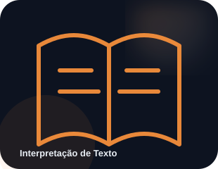
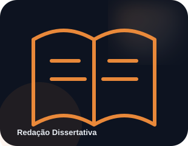
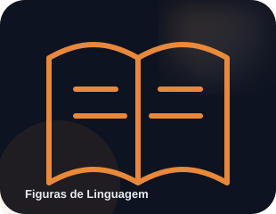

IDEIA 01
Origem do idioma
O português evoluiu do latim vulgar levado à Península Ibérica pelos romanos há mais de 2 mil anos.
Uma trilha visual para estudar português com conceitos em camadas, exemplos e descobertas que ajudam a fixar o conteúdo.
Classes de palavras, sintaxe e concordância.
↗
TÓPICO 02Leitura crítica, inferência e coesão.
↗TÓPICO 03Do Barroco ao Modernismo e além.
↗
TÓPICO 04Estrutura argumentativa e coesão textual.
↗
TÓPICO 05Metáfora, metonímia, ironia e mais.
↗TÓPICO 06Sons, fonemas e encontros vocálicos.
↗O português evoluiu do latim vulgar levado à Península Ibérica pelos romanos há mais de 2 mil anos.
O Acordo Ortográfico de 1990 unificou regras entre os países de língua portuguesa, com vigência plena no Brasil desde 2016.
"Pneumoultramicroscopicossilicovulcanoconiótico" é frequentemente citada como uma das palavras mais longas da língua.
Leia como um editor. Depois avance em ordem ou escolha o tópico que você precisa revisar agora. As páginas são independentes para facilitar o estudo rápido.